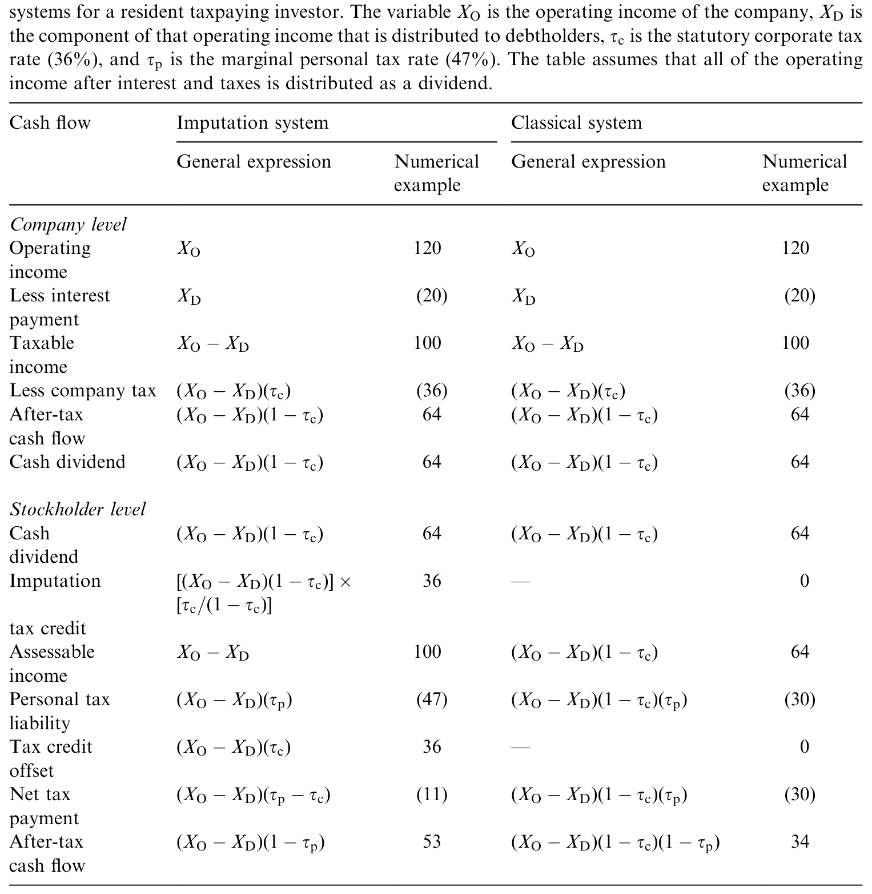
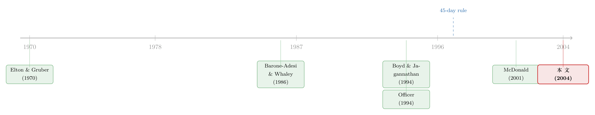

同一块钱的税抵免，凭什么对你值一块、对我值零？
本文读的是 Cannavan, Finn & Gray (2004, Journal of Financial Economics)：他们绕开传统的「除息日价格下跌」法，转而从个股期货与现货的相对价格里，把澳大利亚股利归集制下「一块钱税抵免到底值多少」这个数估了出来。结论很硬：在 1997 年税法收紧之前，大盘、高股息公司里的税抵免值到面值的 50%；收紧之后，这个价值「难以察觉，与零无异」。
1 一块钱的两副面孔
先讲一个看上去有点荒诞、却真实存在的现象。
澳大利亚实行的是完全归集制 (full dividend imputation)：公司在公司层面交过的税，可以「归集」到股东头上，抵掉股东个人所得税。这样一来，分红就不再被「先按公司税率征一遍、再按个人税率征一遍」的双重征税。当一家公司把已经缴过公司税的利润分出来时，股东拿到的不只是现金股利，还附带一张归集税抵免 (imputation tax credit)——澳洲人管这叫「带票息的（franked）」股利。
问题来了：这张抵免票，对不同的人值的钱完全不一样。
对一个澳大利亚本地、要交个人所得税的居民，或者一只本地养老金 (superannuation fund)，这张票能实打实地抵掉应缴税款，一块钱就值一块钱。可对一个免税机构、或者一个根本不在澳洲交个人所得税的境外投资者，这张票贴在手里一文不值——因为他压根没有澳洲的个人税负可抵。
于是同一张归集税抵免，对你值 1，对我值 0。那么，对「市场」而言，它到底值多少？
这不是一个吹毛求疵的学术问题。Officer (1994) 早就指出，归集税抵免对边际股东 (marginal stockholder) 的价值，是公司估值里一个绕不开的参数：你把它算进现金流，或者折进加权平均资本成本 (WACC)，整条估值都会跟着变。澳大利亚的监管实践干脆一刀切，在算资本成本时默认这个价值是 0.5——一个既无理论、也无实证支撑的「拍脑袋」数字。
这篇论文要做的，就是把这个被拍脑袋拍出来的数，老老实实地估出来。而它真正的高明之处，不在结论，而在它从哪里把这个数读出来。
2 先把账算清楚：γ 与 θ 不是一回事
要理解这篇论文，得先把归集制的算术弄明白。这里有一张论文用来演示机理的表（见表 4）。
设想一个代表性投资者，他在某公司的经营利润里分到 $100。他的个人边际税率是 47%，本该缴 $47 的个人所得税。但公司已经在公司层面替他缴掉了 $36（按 36% 的公司税率），于是他个人只需要再补 $11。换句话说，公司缴的那 $36，整整一笔都是个人税的「预缴」——它名义上叫公司税，实质上是股东个人税的提前征收。

Table 4: provides an illustration of the mechanics of the imputation tax system and
Officer (1994) 把这件事抽象成一个参数 γ（gamma）：它是「公司层面缴的税里，有多大比例其实是边际投资者个人税的预缴、从而转化成了归集税抵免」。
但这篇论文要估的，并不是 γ。作者把话说得很清楚：他们估的是抵免一旦真正分配到投资者手里之后、那一块钱的市场价值，记作 θ（theta）。绝大多数想给归集税抵免定价的论文，估的其实都是 θ，只是很少有人明说。
γ 和 θ 什么时候相等？只有当公司把当期已缴公司税的利润 100% 全分掉时，两者才一致。作者举了个干净的例子：假设一家公司只把它「澳洲利润」的 60% 分出来，而它所有股东都能完全用上手里的抵免。那么对这些股东来说，每一块抵免都能用满，θ = 1；可与此同时 γ < 1——因为还有 40% 的利润（和对应的抵免）留在公司里没分出来，即便将来会分，时间价值的损耗也注定让 γ 小于 1。
一句话记住两者的关系：θ 是 γ 的上界，而且只有当公司「分红即分光」时上界才被触及。监管者假设 γ=0.5，文献估的却是 θ，这本身就是一笔糊涂账——你用估出来的 θ 去填 γ 的位置，逻辑上就先错了一截。
把这层关系讲透很重要：它意味着论文估出来的「最高 50%」，是边际投资者价值 γ 的一个上界，而非 γ 本身。
3 为什么不能用「除息日掉价」那把老尺子
接着，一个自然的问题是：要估 θ，传统上人们怎么做？
答案是除息日价格下跌 (ex-dividend price dropoff)。逻辑很朴素：股票在除息那一刻会掉价，掉价的幅度除以股利金额，就是股利（和抵免）相对资本利得的「相对价值」。早期围绕这个比率，文献吵了几十年（Campbell & Beranek, 1955；Elton & Gruber, 1970；Kalay, 1982 一路下来）。
可作者一口气列了四条让这把老尺子失灵的理由，而且条条致命：
第一，噪声太大。 除息日研究每一次分红只产生一个观测，价格里的噪声让估计的抽样误差大得离谱。Brown & Clarke (1993) 估出来的 θ，95% 置信区间在 1987–1989 是 [−12.44%, +24.52%]，到 1989–1991 直接变成 [+38.46%, +103.68%]——区间宽到几乎什么都没说。
第二，股利和抵免被搅在一起，分不开。 想把抵免的价值单独剥出来，你得先估出现金股利本身的资本化价值，而这又依赖「股利价值与票息程度无关」这个假设。可一旦存在票息客户群 (imputation clientele)——Bellamy (1994) 就发现，付大额全额票息股利的公司更容易吸引本地纳税投资者——这个假设就塌了。
第三，假设抵免价值「不随时间、不随公司变化」。 Wood (1995) 指出这两条假设多半都不成立。
第四，微观结构在捣乱。 Frank & Jagannathan (1998) 发现香港股票除息掉价小于股利金额，可香港既不征股利税也不征资本利得税——掉价不足纯粹是买卖价差搞的鬼。Bali & Hite (1998) 也证明，当价格被钉在离散的最小变动价位上、而股利是连续的，掉价天然就会小于股利。于是「掉价不足」到底是税收偏好，还是微观结构？除息日法根本分不清。
四条加起来，结论是：靠除息日掉价，根本没法把现金股利和归集税抵免的价值干净地分开。 这就逼出了论文真正的那一步。
（关于「个人税如何悄悄定价了股票」，一个用伦敦 AIM 做的更干净的实验，可参见《个人税，悄悄定价了你的股票》；而税收如何改写企业行为，则可参见《派息税没有改变投资的「总量」，却悄悄改写了它的「去向」》。）
4 真正关键的一步：从期货价格里把它「读」出来
但真正关键的一步在于换一套数据源。作者不再盯着除息那一瞬间的股价，而是去看一类澳洲零售市场独有的衍生品——个股期货合约 (individual share futures, ISFs) 和低行权价期权 (low exercise price options, LEPOs)——它们与对应现货之间的相对价格。
为什么期货能解决问题？直觉藏在持有成本 (cost of carry) 里。
一份个股期货，约定你在到期日按今天锁定的价格买入股票。问题是：在到期之前，期货持有人是拿不到这段时间里派发的股利和抵免的——这些都归现货持有人。所以，期货价格相对于「把现货按无风险利率搬到到期日」的成本，会正好低一块，低的这一块就是期货持有人放弃掉的那些现金流的市场价值。而这个市场价值，恰恰就是我们想估的东西。
把这层逻辑写成一个式子（其精神可追溯到 Cox, Ingersoll & Ross (1981) 对远期与期货价格关系的刻画）：
这里 \(F\) 是期货价格，\(S\) 是现货价格，\(r\) 是到期前的无风险利率，\(d\) 是现金股利、\(\delta\) 是市场对每元现金股利的估值，\(c\) 是归集税抵免、\(\theta\) 是市场对每元抵免的估值。而抵免本身的大小由公司税率决定——在 36% 税率下，每一块全额票息的现金股利，附带的抵免是
$$c = \frac{\tau}{1-\tau}\, d = \frac{0.36}{1-0.36}\, d \approx 0.56\, d.$$
这套做法的妙处在哪？
其一，观测量爆炸式增加。 除息日法一次分红只给你一个点；而期货市场里，每一笔成交都是一个新观测。Barone-Adesi & Whaley (1986) 早就在经典税制下用看涨期权干过类似的事——从期权价格里反推隐含的股利价值，发现现金股利按全额面值定价。
其二，能在除息日之前一个月甚至更早就取数。 这一点至关重要。除息日附近活跃的，往往是做短期套息 (dividend capture) 的套利者，他们的交易未必反映真正的边际股东——也就是最终决定均衡股价的那个人——对股利和抵免的估值。Wood (1995) 担心的正是这一点。而期货在远离除息日的时段就有报价，价格里更可能沉淀的是均衡估值，而非短期套利的噪声。
于是反转出现了：一个看似纯税收的估值难题，被巧妙地翻译成了一道衍生品定价的问题。McDonald (2001) 在德国市场用 DAX 指数与其期货做过同构的事，得出「对指数里的平均公司，抵免对边际投资者的价值超过面值一半」；Twite & Wood (1997) 也用个股期货估过「税前还原（grossed-up）股利」。这篇论文是把这条思路在个股层面进一步打磨、并加上了一个绝佳的政策实验。
5 那场叫「45 天规则」的政策实验
故事到这里还缺一个支点——1997 年的税法收紧。
在那之前，境外和免税投资者虽然不能直接用抵免，却可以通过各种「过票」安排，把抵免卖给能用上的本地居民，从中分一杯羹。Wood (1995) 记录过一种上市权证 (listed warrant)：它本质是行权价一分钱的欧式看涨期权，定价时把股利「税前还原」到现金股利的约 118%，等于让权证买家拿到了抵免面值的 32%（1 + 0.32 × 0.56 = 1.18）。Partington & Walker (1999) 还记载过一种临时转让股权的安排，本地公司在除息日前后「借走」股票拿到股利和抵免，再以 105%–110% 的代价还回去——这等于把抵免按面值的 9%–18% 定了价。
这些安排有一个共同点：它们让本来用不上抵免的人，也能从抵免里榨出价值。 对国库而言，这是在悄悄流失税收。
于是 1997 年联邦预算出手了，核心是一条 45 天最低持有期规则 (45-day rule)：除非在分红权益日前后持有股票满 45 天，否则不享受票息抵免；而且在计算持有天数时，任何「风险削减安排」的日子都不算数——只要你用衍生品对冲掉了 70% 以上的价格风险，抵免就被取消。规则于 1997 年 7 月 1 日生效。
这条规则的设计目标，就是斩断抵免的「过票」交易。这就给了作者一个干净的处理：让 θ 的估计值在 1997 年 7 月 1 日前后自由不同，看政策有没有真的把抵免的市场价值打下去。
6 数据与主要结果
数据来自悉尼期货交易所 (Sydney Futures Exchange, SFE) 的个股期货合约（每份通常对应某公司 1,000 股）以及低行权价期权，配上对应个股的现货价格；样本横跨 1997 年税改前后，这样才能做前后对比。
结果干净利落，落在三句话上：
第一，税改之前，抵免确实值钱——但只在「对的」公司里。 在大盘、高股息的公司中，归集税抵免值到面值的 50%。这个量级与 McDonald (2001) 在德国估出的「超过一半面值」遥相呼应。
第二，税改之后，几乎归零。 45 天规则一上，隐含的抵免价值就与零无统计差异——「难以察觉任何价值」。政策达到了它的目的。
第三，也是机制上最关键的一条——抵免价值与股息率强相关。 越是高股息的公司，抵免越值钱。这恰恰印证了那条「成本高昂的转让」逻辑：抵免之所以对境外投资者有价值，是因为他们能（在 1997 年之前）把抵免有偿转让给本地居民，而高股息公司正是这种转让最划算、规模最大的地方。一旦 45 天规则抬高了转让成本，这条价值来源就被掐断了。
把这三条串起来，作者给出了一个更深的论断：结果与「境外投资者是大盘澳洲公司里的边际定价者」这一图景一致。如果定价的边际投资者是本地居民，抵免本该被充分定价（接近面值）；可实际估出来的远低于面值、且高度依赖「能不能转让」，这说明站在边际上的，是那些自己用不上抵免、只能靠转让套现的境外人。
注意这个「50%」是 θ 的上界含义下的 50%，再叠加前面 θ≥γ 的关系——它对监管者关心的 γ 而言，是上界的上界。换句话说，监管实践里默认的 γ=0.5，很可能系统性地高估了抵免对边际投资者的真实价值，尤其在 1997 年之后。
（把「境外投资者究竟是不是市场里那个特殊的边际人」这个问题放到更大的版图上看，可参见《外资真是「蝗虫」吗？——一次跨 30 国的长期投资体检》。）
7 文献脉络
把这篇论文放回它生长的那条线里，脉络其实很清晰。
最早的一支，是围绕除息日掉价的客户群之争：Elton & Gruber (1970) 用除息日行为推断边际股东的税率，Kalay (1982)、Elton-Gruber-Rentzler (1984)、Michaely (1991) 一路把这个估计的可靠性吵成了一桩公案。这一支的共同软肋，前文那四条已经讲透。
第二支转折，来自 Boyd & Jagannathan (1994)。他们意识到除息日数据里混着「有套利者活跃」和「没套利者活跃」两类观测，于是搭了一个成本高昂的套利均衡 (costly-arbitrage equilibrium) 框架，预测掉价百分比与股息率之间是非线性的，并得出「边际掉价约等于股利金额」的经验法则。这套均衡框架是后来所有归集制定价研究的地基。

第三支，把均衡框架搬进归集制。 McDonald (2001) 把 Boyd-Jagannathan 的思路扩展到含归集税抵免的市场，用德国股票和 DAX 期货估出抵免价值超过面值一半。与此并行的，是从衍生品而非除息日取数的传统：Barone-Adesi & Whaley (1986) 用看涨期权反推股利价值，Twite & Wood (1997) 用个股期货估税前还原股利。
澳洲本地的一支则一直众说纷纭：Brown & Walter (1986) 报告税前掉价比 0.75，Hathaway & Officer (1992) 把 θ 估在 77%–82%，Bruckner et al. (1994) 估出从 33.5%（1987–1990）跳到 68.5%（1990–1993）——点估计散得满地都是，置信区间个个宽得吓人。作者一针见血：这片文献「没有给出任何清晰结论」，而且它们估的全是 θ、却被当成 γ 在用。
这篇论文站的位置，就是把 McDonald (2001) 的均衡—衍生品思路在个股期货上做精，再用 1997 年的 45 天规则补上一个时间维度的政策实验。它的贡献不在于又报了一个点估计，而在于第一次把「抵免值多少」和「政策能不能改变它」放进同一个干净的设计里回答。
8 评论与延伸（Q&A + 研究方向）
(a) 几个可能的疑问
Q：θ 和 γ 到底差在哪，为什么非要分清楚？
γ 是「公司缴的税里有多大比例转化成了边际投资者的抵免」；θ 是「一块抵免一旦分到手值多少钱」。两者只有在公司把当期已纳税利润 100% 分光时才相等，否则 θ 严格大于 γ（因为未分配利润对应的抵免有时间价值损耗）。论文估的是 θ，所以它的 50% 是 γ 的上界——监管者拿 θ 当 γ 用，逻辑上先就高估了。
Q：凭什么相信期货法比除息日法更可靠？
三个理由：观测量从「一次分红一个点」变成「每笔成交一个点」；取数时点可以远在除息日之前，避开短期套息者的噪声；而且现金股利价值 δ 和抵免价值 θ 能在同一个定价式里同时被识别，不必先假设「股利价值与票息程度无关」。代价是你得同时估两个参数，且结果依赖持有成本/期货定价模型设定是否正确。
Q：「税改后归零」会不会只是市场环境变了，而非 45 天规则的功劳？
这是最值得担心的识别问题。1997 年 7 月 1 日是一个明确的断点，但它不是随机的——同期可能有别的宏观或税制变化。论文靠的是「前后允许 θ 不同」的对比，更接近事件前后比较而非带对照组的双重差分。要更硬的因果，理想是找一组不受 45 天规则影响的证券或市场做对照。
Q：为什么抵免价值偏偏和股息率强相关？
因为抵免对境外投资者的价值来自「有偿转让给本地居民」，而转让在高股息公司里规模大、单位成本低、最划算。所以高股息处抵免最值钱；45 天规则把转让成本抬上去，这条价值线也就最先被打断。这正是「境外投资者是边际定价者」的有力旁证。
Q：50% 这个数，和澳洲本地此前 77%–82% 的估计冲突吗？
不必然冲突，但更可信。Hathaway & Officer (1992) 的自变量（票息比例）在 0 和 1 处双峰、中间稀疏，斜率和截距对少数有影响力的观测极敏感；Bruckner et al. (1994) 后期样本里股利几乎全额票息、税率近似恒定，抵免与现金股利近乎完全共线，单个系数根本没法解释。期货法绕开了这两个老问题，所以它更低、也更稳的估计，反而更让人安心。
Q：这对中国这类没有归集制的市场有什么借鉴？
直接的制度借鉴有限，但方法论上很通用：只要某类现金流对不同投资者价值不同，而又存在一个剥离了这部分现金流的衍生品（期货、远期、互换），就能从两者价差里把这部分价值识别出来。 这套「用衍生品给税收/制度楔子定价」的思路，可以迁移到很多带身份歧视性税收待遇的市场。
(b) 几个可能的研究问题与提案
1. 把同一套期货—现货识别法搬到公司债，给「税收/身份楔子」定价。 - 【经济故事】公司债的票息在不同持有人手里税收待遇不同（应税账户 vs. 免税养老金 vs. 境外免预扣税）。若存在债券期货或总收益互换，理论上能从中剥离出不同投资者群体对票息的隐含估值。 - 【可行性】中。需要流动的单一发行人债券衍生品，现实里多为指数层面，个券识别偏难；可先在国债期货 + 不同税收待遇的现货账户上试。
2. 境外持有比例与「抵免/票息价值」的横截面关系。 - 【经济故事】若境外投资者确是边际定价者，那么境外持股越高的公司，其税收抵免/优惠的隐含价值应越低。可用持股结构数据直接检验「谁在边际上定价」。 - 【可行性】高。归集制国家（澳、新等）有持股结构与 ISF 数据，把 θ 的横截面估计回归到境外持股比例上即可，识别清晰、数据可得。
3. 把 45 天规则当作流动性冲击，看它如何改变除息日附近的做市与买卖价差。 - 【经济故事】规则斩断了套息交易，理论上会改变除息日前后的成交量、波动与流动性供给。这是一个干净的「监管—流动性」自然实验。 - 【可行性】高。需要 1997 年前后 SFE/ASX 的逐笔成交与报价数据，断点明确，可做事件研究或断点设计。
4. 重估监管 WACC：用 θ 的上界性质给「γ=0.5」做一次校准审计。 - 【经济故事】既然 θ≥γ 且本文 θ 上界约 0.5，监管默认的 γ=0.5 很可能系统性偏高。可量化这一偏差对受监管行业（电网、电信）准许收益的影响。 - 【可行性】中。需要把 θ 估计映射到 γ 还需分红率假设，但政策含义大、数据公开，值得做。
我的判断。 这篇论文最漂亮的地方，是把一个被「除息日掉价」拖了几十年泥潭的税收估值问题，干脆利落地翻译成衍生品定价，再借 1997 年的 45 天规则补上时间维度——「值多少」和「政策能否改变它」被装进了同一个设计里。贡献是方法论的，而非又添一个点估计。 我的主要隐忧在识别：1997 年 7 月这个断点虽清晰，却缺一个不受规则影响的对照组，「税改后归零」里有多少是规则之功、多少是同期市场环境之变，论文给不出更强的反事实；此外，θ 的估计高度依赖持有成本/期货定价的模型设定，ISF 与 LEPO 自身的流动性与微观结构（讽刺的是，正是论文用来批评除息日法的那类问题）也可能反过来污染期货价差。我接下来最想看到的，是把「境外持股比例 → θ 横截面」这条线做实——如果边际定价者真是境外投资者，这条横截面关系应该清清楚楚地浮出来，那才是对「谁在边际上定价」这一核心论断最直接的检验。
参考文献
- Barone-Adesi, G., Whaley, R.E. (1986). The valuation of American call options and the expected stock price decline. Journal of Financial Economics 17, 91–111.
- Bali, R., Hite, G.L. (1998). Ex-dividend day stock price behavior: discreteness or tax-induced clienteles? Journal of Financial Economics 47, 127–159.
- Bellamy, D.E. (1994). Evidence of imputation clienteles in the Australian equity market. Asia Pacific Journal of Management 11, 275–287.
- Boyd, J.H., Jagannathan, R. (1994). Ex-dividend price behavior of common stocks. Review of Financial Studies 7, 711–741.
- Brown, P., Clarke, A. (1993). The ex-dividend day behavior of Australian share prices before and after dividend imputation. Australian Journal of Management 18, 1–40.
- Brown, P., Walter, T. (1986). Ex-dividend day behavior of Australian share prices. Australian Journal of Management 12, 139–152.
- Bruckner, P., Dews, N., White, D. (1994). Capturing value from dividend imputation. McKinsey & Company Report.
- Cox, J.C., Ingersoll, J.E., Ross, S.A. (1981). The relation between forward and futures prices. Journal of Financial Economics 9, 373–382.
- Elton, E., Gruber, M.J. (1970). Marginal stockholder tax rates and the clientele effect. Review of Economics and Statistics 52, 68–74.
- Frank, M., Jagannathan, R. (1998). Why do stock prices drop by less than the value of the dividend? Evidence from a country without taxes. Journal of Financial Economics 47, 161–188.
- Grammatikos, T. (1989). Dividend stripping, risk exposure, and the effect of the 1984 Tax Reform Act on the ex-dividend day behavior. Journal of Business 62, 157–173.
- Hathaway, N.J., Officer, R.R. (1992). The value of imputation tax credits. Unpublished working paper, University of Melbourne.
- Kalay, A. (1982). The ex-dividend day behavior of stock prices: a re-examination of the clientele effect. Journal of Finance 37, 1059–1070.
- McDonald, R.L. (2001). Cross-border investing with tax arbitrage: the case of German dividend tax credits. Review of Financial Studies 14, 617–657.
- Michaely, R. (1991). Ex-dividend day stock price behavior: the case of the 1986 Tax Reform Act. Journal of Finance 46, 845–859.
- Officer, R.R. (1988). A note on the cost of capital and investment evaluation for companies under the imputation tax. Accounting and Finance 28, 65–71.
- Officer, R.R. (1994). The cost of capital under an imputation tax system. Accounting and Finance 34, 1–18.
- Partington, G.H., Walker, S. (1999). The 45-day rule: the pricing of dividends and the crackdown on trading in imputation credits. Unpublished working paper, University of Technology Sydney.
- Twite, G., Wood, J. (1997). The pricing of Australian imputation tax credits: evidence from individual share futures contracts. Unpublished working paper, Australian Graduate School of Management.
- Wood, J. (1995). A simple model for pricing imputation tax credits under Australia's dividend imputation tax system. Unpublished working paper, Australian Graduate School of Management.